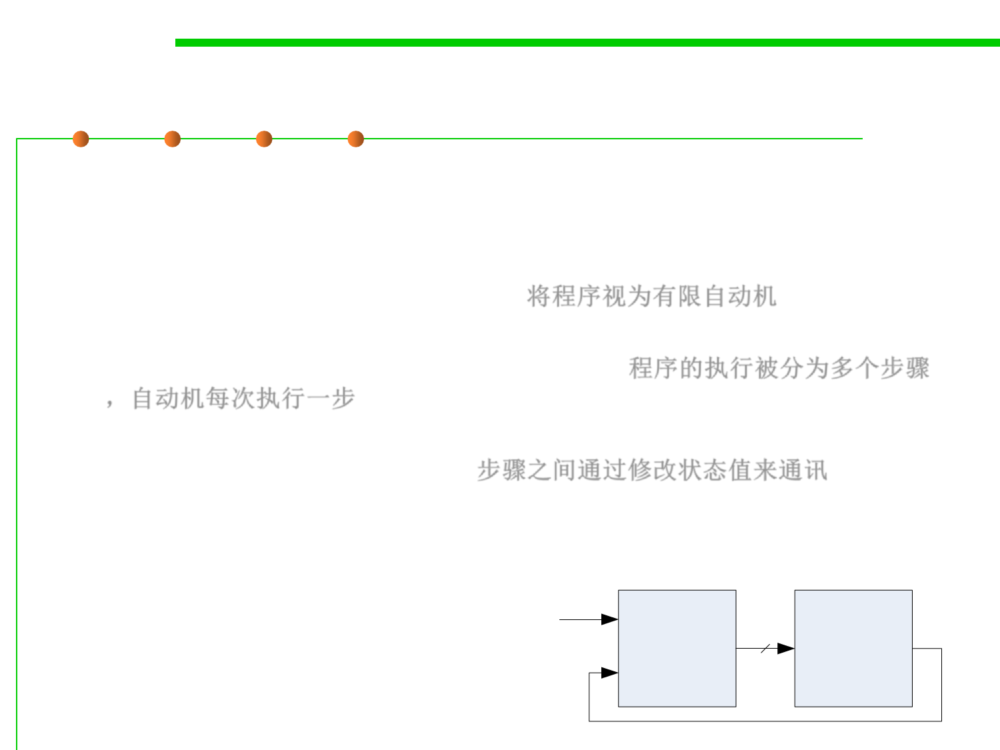

6.3 Maintainability-Oriented Construction Techniques
Automata-based programming
▪ Automata-based programming is a programming paradigm in
which the program or part of it is thought of as a model of a finite
state machine (FSM) or any other formal automaton.
– Treat a program as a finite automata. 将程序视为有限自动机
– Each automaton can take one “step” at a time, and the execution of the
program is broken down into individual steps. 程序的执行被分为多个步骤
，自动机每次执行一步
– The steps communicate with each other by changing the value of a
variable representing “the state“. 步骤之间通过修改状态值来通讯
– Control flow of the program is determined by the value of that variable.
▪ Application design approach should be similar to the design of
control systems (Automata System). E, X2
Control
System
Z
Controlled X1
Object